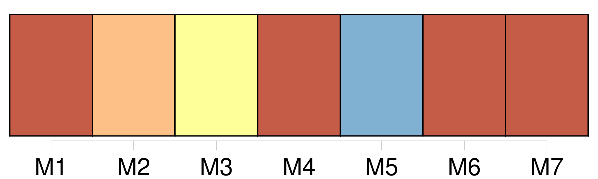

Longueur nb maillons : 11 mentions |
 |
Le sang abandonna complétement sa charmante figure, et elle devint d’ une blancheur de marbre ; ses beaux bras tombèrent le long de [son corps] , comme si les muscles [en] avaient été dénoués, et elle s’ appuya contre un pilier, car ses jambes fléchissaient et se dérobaient sous elle. [131 phrases] seigneur prêtre ; mais si vous n’ avez pu sauver l’ âme, venez veiller [le pauvre corps] [13 phrases] Elle était couverte d’ un voile de lin d’ une blancheur éblouissante, que le pourpre sombre de la tenture faisait encore mieux ressortir, et d’ une telle finesse qu’ il ne dérobait en rien la forme charmante de [son corps] et permettait de suivre ces belles lignes onduleuses comme le cou d’ un cygne que la mort même n’ avait pu roidir. [17 phrases] Je restai longtemps absorbé dans une muette contemplation, et plus je la regardais, moins je pouvais croire que la vie avait pour toujours abandonné [ce beau corps] [58 phrases] Enveloppée de ce fin tissu qui trahissait tous les contours de [son corps] , elle ressemblait à une statue de marbre de baigneuse antique plutôt qu’ à une femme douée de vie. [6 phrases] Que de peine mon âme, rentrée dans ce monde par la puissance de la volonté, a eue pour retrouver [son corps] et s’ [y] réinstaller!! [152 phrases] et que mon amour s’ infiltre dans [ton corps] avec mon sang!! [28 phrases] » et il aspergea d’ eau bénite [le corps] et le cercueil, sur lequel il traça la forme d’ une croix avec son goupillon. La pauvre Clarimonde n’ eut pas été plutôt touchée par la sainte rosée que [son beau corps] tomba en poussière ; ce ne fut plus qu’ un mélange affreusement informe de cendres et d’ os à demi calcinés. |

|
Il est possible de télécharger la ressource sur la page Ortolang |
Si vous avez des questions ou vous voyez des erreurs, merci d'envoyer un mail à silvia.federzoni89@gmail.com |